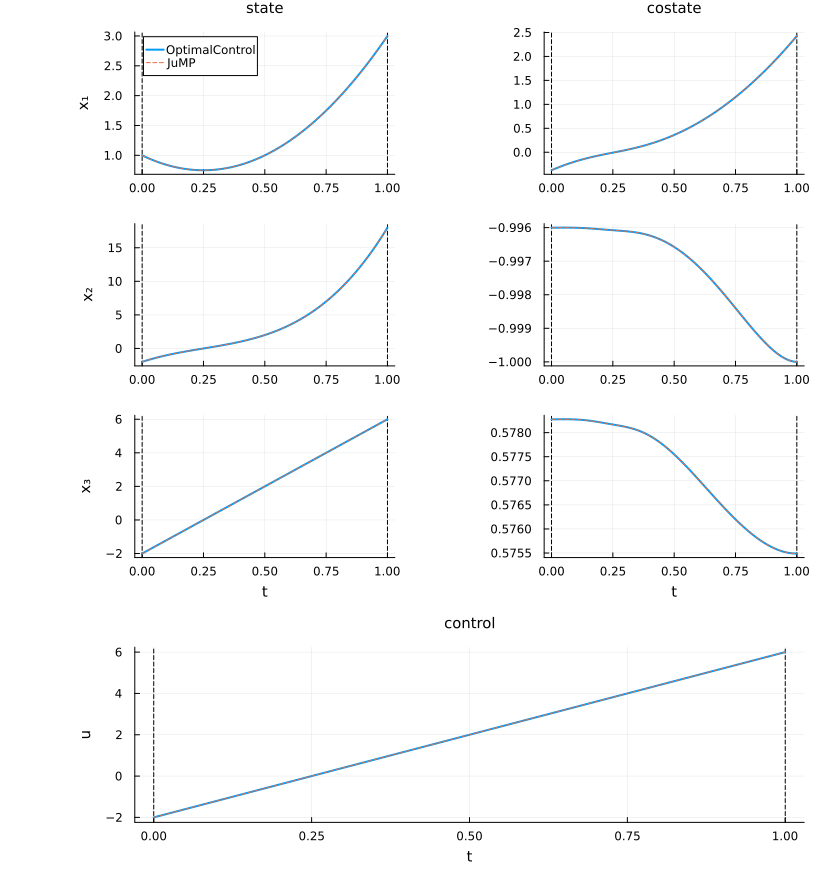
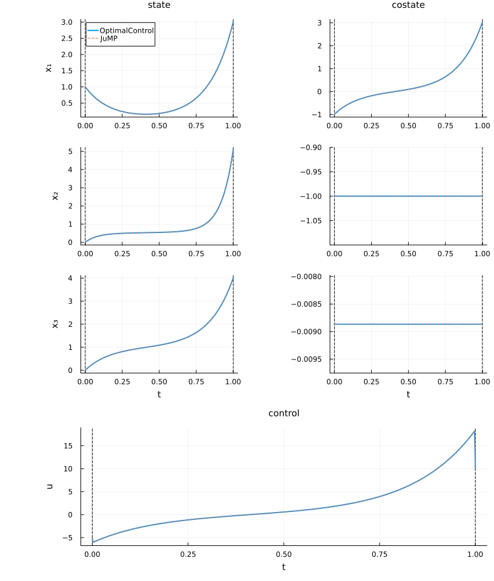

Chain
Description of the problem
The Hanging Chain problem is a classical benchmark in optimal control. It consists of moving a chain from a given initial horizontal position to a target horizontal position while controlling the horizontal velocity of the chain. The objective is to reach the final configuration in a way that minimises the vertical displacement $x_2$ of the chain. This problem is widely used to test trajectory optimisation and direct transcription methods for nonlinear optimal control.
Mathematical formulation
The problem can be stated as
\[\begin{aligned} \min_{x_1, x_2, x_3, u} \quad & x_2(T) \\[0.5em] \text{s.t.} \quad & \dot{x}_1 = u, \quad \dot{x}_2 = x_1 \sqrt{1 + u^2}, \quad \dot{x}_3 = \sqrt{1 + u^2}, \\[0.5em] & x_1(0) = a, \quad x_2(0) = 0, \quad x_3(0) = 0, \\[0.25em] & x_1(T) = b, \quad x_3(T) = L. \end{aligned}\]
System parameters
| Parameter | Symbol | Value | Description |
|---|---|---|---|
| Horizontal start | $a$ | 1 | Initial $x_1$ position |
| Horizontal end | $b$ | 3 | Final $x_1$ position |
| Chain length | $L$ | 4 | Total length of the chain |
| Final time | $T$ | 1 | Duration of the motion |
| Control input | $u$ | — | Horizontal velocity of the chain |
Qualitative behaviour
The optimal control trajectory exploits the nonlinear coupling between horizontal and vertical motion:
- The state $x_1$ directly follows the control input $u$ (horizontal velocity).
- The state $x_2$ evolves depending on $x_1$, which introduces nonlinear dynamics in the vertical motion.
- The state $x_3$ measures the chain extension and grows with the magnitude of $u$.
The control typically balances horizontal movement to minimise the vertical displacement at the final time.
Characteristics
- Nonlinear dynamics with three states and one control.
- Minimum vertical displacement objective with boundary constraints.
- Serves as a benchmark for trajectory optimisation and direct transcription methods in nonlinear optimal control.
References
More, J. J., & Munson, T. S. (2000). The Hanging Chain Problem as an Optimal Control Problem. mcs.anl.gov/~more/cops/bcops/chain.html This benchmark explicitly formulates the Hanging Chain (catenary) as an optimal control problem, including direct transcription to an NLP. It is widely used as a test case for solver performance in AMPL, MINOS, and other tools.
Dolan, E. D., & More, J. J. (2001). Benchmarking Optimisation Software with COPS 3.0. Technical Report ANL/MCS-TM-246, Argonne National Laboratory. mcs.anl.gov/~more/cops The COPS benchmark collection officially includes the Hanging Chain problem as one of its core examples. It provides comprehensive problem formulation, discretisation strategies, and solver comparison results.
Rutquist, P. E., & Edvall, M. M. (2009). Hanging Chain problem example in PROPT MATLAB Optimal Control Software. Included in the PSOPT distribution’s example suite, as credited by PSOPT’s list of examples (psopt.net). This demonstrates a practical implementation of the Hanging Chain problem via direct transcription using MATLAB-based optimal control software.
Huygens, C. (1690). Horologium Oscillatorium. Paris: F. Muguet. This foundational work contains one of the earliest studies of the hanging chain (catenary) curve. Huygens, along with Leibniz and Johann Bernoulli, contributed to the historical derivation of the catenary equation, which underlies modern optimal control formulations of the problem.
Numerical set-up
In this section, we prepare the numerical environment required to study the problem. We begin by importing the relevant Julia packages and then initialise the data frames that will store the results of our simulations and computations. These structures provide the foundation for solving the problem and for comparing the different solution strategies in a consistent way.
using OptimalControlProblems # to access the Beam model
using OptimalControl # to import the OptimalControl model
using NLPModelsIpopt # to solve the model with Ipopt
import DataFrames: DataFrame # to store data
using NLPModels # to retrieve data from the NLP solution
using Plots # to plot the trajectories
using Plots.PlotMeasures # for leftmargin, bottommargin
using JuMP # to import the JuMP model
using Ipopt # to solve the JuMP model with Ipopt
using Printf # to print
data_pb = DataFrame( # to store data about the problem
Problem=Symbol[],
Grid_Size=Int[],
Variables=Int[],
Constraints=Int[],
)
data_re = DataFrame( # to store data about the resolutions
Model=Symbol[],
Flag=Any[],
Iterations=Int[],
Objective=Float64[],
)Initial guess
Before solving the problem, it is often useful to inspect the initial guess (sometimes called the first iterate). This guess is obtained by running the NLP solver with max_iter = 0, which evaluates the problem formulation without performing any optimisation steps.
We plot the resulting trajectories for both the OptimalControl and JuMP models. Since both backends represent the same mathematical problem, their initial guesses should coincide, providing a useful consistency check before moving on to the optimised solution.
Click to unfold and see the code for plotting the initial guess.
function plot_initial_guess(problem)
# -----------------------------
# Extract dimensions from metadata
# -----------------------------
x_vars = metadata[problem][:state_name]
u_vars = metadata[problem][:control_name]
n_states = length(x_vars)
n_controls = length(u_vars)
# -----------------------------
# Build OptimalControl problem
# -----------------------------
ocp_model = eval(problem)(OptimalControlBackend())
nlp_oc = nlp_model(ocp_model)
# Solve NLP with zero iterations (initial guess)
nlp_oc_sol = NLPModelsIpopt.ipopt(nlp_oc; max_iter=0)
# Build OptimalControl solution
ocp_sol = build_ocp_solution(ocp_model, nlp_oc_sol)
# -----------------------------
# Plot OptimalControl solution
# -----------------------------
plt = plot(
ocp_sol;
state_style=(color=1,),
costate_style=(color=1, legend=:none),
control_style=(color=1, legend=:none),
path_style=(color=1, legend=:none),
dual_style=(color=1, legend=:none),
size=(816, 220*(n_states+n_controls)),
label="OptimalControl",
leftmargin=20mm,
)
# Hide legend for additional state plots
for i in 2:n_states
plot!(plt[i]; legend=:none)
end
# -----------------------------
# Build JuMP model
# -----------------------------
nlp_jp = eval(problem)(JuMPBackend())
# Solve NLP with zero iterations (initial guess)
set_optimizer(nlp_jp, Ipopt.Optimizer)
set_optimizer_attribute(nlp_jp, "max_iter", 0)
optimize!(nlp_jp)
# Extract trajectories
t_grid = time_grid(problem, nlp_jp)
x_fun = state(problem, nlp_jp)
u_fun = control(problem, nlp_jp)
p_fun = costate(problem, nlp_jp)
# -----------------------------
# Plot JuMP solution on top
# -----------------------------
# States
for i in 1:n_states
label = i == 1 ? "JuMP" : :none
plot!(plt[i], t_grid, t -> x_fun(t)[i]; color=2, linestyle=:dash, label=label)
end
# Costates
for i in 1:n_states
plot!(plt[n_states+i], t_grid, t -> -p_fun(t)[i]; color=2, linestyle=:dash, label=:none)
end
# Controls
for i in 1:n_controls
plot!(plt[2*n_states+i], t_grid, t -> u_fun(t)[i]; color=2, linestyle=:dash, label=:none)
end
return plt
endplot_initial_guess(:chain)
Solving the problem
To solve an optimal control problem, we can rely on two complementary formulations: the OptimalControl backend, which works directly with the discretised control problem, and the JuMP backend, which leverages JuMP’s flexible modelling framework.
Both approaches generate equivalent NLPs that can be solved with Ipopt, and comparing them ensures consistency between the two formulations.
Before solving, we can inspect the discretisation details of the problem. The table below reports the number of grid points, decision variables, and constraints associated with the chosen formulation.
push!(data_pb,
(
Problem=:chain,
Grid_Size=metadata[:chain][:N],
Variables=get_nvar(nlp_model(chain(OptimalControlBackend()))),
Constraints=get_ncon(nlp_model(chain(OptimalControlBackend()))),
)
)| Row | Problem | Grid_Size | Variables | Constraints |
|---|---|---|---|---|
| Symbol | Int64 | Int64 | Int64 | |
| 1 | chain | 500 | 2004 | 1505 |
OptimalControl model
We first solve the problem using the OptimalControl backend. The process begins by importing the problem definition and constructing the associated nonlinear programming (NLP) model. This NLP is then passed to the Ipopt solver, with standard options for tolerance and barrier parameter strategy.
# import DOCP model
docp = chain(OptimalControlBackend())
# get NLP model
nlp_oc = nlp_model(docp)
# solve
nlp_oc_sol = NLPModelsIpopt.ipopt(
nlp_oc;
print_level=4,
tol=1e-8,
mu_strategy="adaptive",
sb="yes",
)Total number of variables............................: 2004
variables with only lower bounds: 0
variables with lower and upper bounds: 0
variables with only upper bounds: 0
Total number of equality constraints.................: 1505
Total number of inequality constraints...............: 0
inequality constraints with only lower bounds: 0
inequality constraints with lower and upper bounds: 0
inequality constraints with only upper bounds: 0
Number of Iterations....: 14
(scaled) (unscaled)
Objective...............: 5.0685777900268363e+00 5.0685777900268363e+00
Dual infeasibility......: 5.7273352727094107e-12 5.7273352727094107e-12
Constraint violation....: 1.8991030970028078e-11 1.8991030970028078e-11
Variable bound violation: 0.0000000000000000e+00 0.0000000000000000e+00
Complementarity.........: 0.0000000000000000e+00 0.0000000000000000e+00
Overall NLP error.......: 1.8991030970028078e-11 1.8991030970028078e-11
Number of objective function evaluations = 21
Number of objective gradient evaluations = 15
Number of equality constraint evaluations = 21
Number of inequality constraint evaluations = 0
Number of equality constraint Jacobian evaluations = 15
Number of inequality constraint Jacobian evaluations = 0
Number of Lagrangian Hessian evaluations = 14
Total seconds in IPOPT = 0.602
EXIT: Optimal Solution Found.JuMP model
We now repeat the procedure using the JuMP backend. Here, the problem is reformulated as a JuMP model, which offers a flexible and widely used framework for nonlinear optimisation in Julia. The solver settings are chosen to mirror those used previously, so that the results can be compared on an equal footing.
# import model
nlp_jp = chain(JuMPBackend())
# solve with Ipopt
set_optimizer(nlp_jp, Ipopt.Optimizer)
set_optimizer_attribute(nlp_jp, "print_level", 4)
set_optimizer_attribute(nlp_jp, "tol", 1e-8)
set_optimizer_attribute(nlp_jp, "mu_strategy", "adaptive")
set_optimizer_attribute(nlp_jp, "linear_solver", "mumps")
set_optimizer_attribute(nlp_jp, "sb", "yes")
optimize!(nlp_jp)Total number of variables............................: 2004
variables with only lower bounds: 0
variables with lower and upper bounds: 0
variables with only upper bounds: 0
Total number of equality constraints.................: 1505
Total number of inequality constraints...............: 0
inequality constraints with only lower bounds: 0
inequality constraints with lower and upper bounds: 0
inequality constraints with only upper bounds: 0
Number of Iterations....: 14
(scaled) (unscaled)
Objective...............: 5.0685777900268318e+00 5.0685777900268318e+00
Dual infeasibility......: 5.7274289477771134e-12 5.7274289477771134e-12
Constraint violation....: 1.8991030970028078e-11 1.8991030970028078e-11
Variable bound violation: 0.0000000000000000e+00 0.0000000000000000e+00
Complementarity.........: 0.0000000000000000e+00 0.0000000000000000e+00
Overall NLP error.......: 1.8991030970028078e-11 1.8991030970028078e-11
Number of objective function evaluations = 21
Number of objective gradient evaluations = 15
Number of equality constraint evaluations = 21
Number of inequality constraint evaluations = 0
Number of equality constraint Jacobian evaluations = 15
Number of inequality constraint Jacobian evaluations = 0
Number of Lagrangian Hessian evaluations = 14
Total seconds in IPOPT = 0.059
EXIT: Optimal Solution Found.Numerical comparisons
In this section, we examine the results of the problem resolutions. We extract the solver status (flag), the number of iterations, and the objective value for each model. This provides a first overview of how each approach performs and sets the stage for a more detailed comparison of the solution trajectories.
# from OptimalControl model
push!(data_re,
(
Model=:OptimalControl,
Flag=nlp_oc_sol.status,
Iterations=nlp_oc_sol.iter,
Objective=nlp_oc_sol.objective,
)
)
# from JuMP model
push!(data_re,
(
Model=:JuMP,
Flag=termination_status(nlp_jp),
Iterations=barrier_iterations(nlp_jp),
Objective=objective_value(nlp_jp),
)
)| Row | Model | Flag | Iterations | Objective |
|---|---|---|---|---|
| Symbol | Any | Int64 | Float64 | |
| 1 | OptimalControl | first_order | 14 | 5.06858 |
| 2 | JuMP | LOCALLY_SOLVED | 14 | 5.06858 |
We compare the solutions obtained from the OptimalControl and JuMP models by examining the number of iterations required for convergence, the $L^2$-norms of the differences in states, controls, and additional variables, and the corresponding objective values. Both absolute and relative errors are reported, providing a clear quantitative measure of the agreement between the two approaches.
Click to unfold and get the code of the numerical comparisons.
function L2_norm(T, X)
# T and X are supposed to be one dimensional
s = 0.0
for i in 1:(length(T) - 1)
s += 0.5 * (X[i]^2 + X[i + 1]^2) * (T[i + 1]-T[i])
end
return √(s)
end
function print_numerical_comparisons(problem, docp, nlp_oc_sol, nlp_jp)
# get relevant data from OptimalControl model
ocp_sol = build_ocp_solution(docp, nlp_oc_sol)
t_oc = time_grid(ocp_sol)
x_oc = state(ocp_sol).(t_oc)
u_oc = control(ocp_sol).(t_oc)
v_oc = variable(ocp_sol)
o_oc = objective(ocp_sol)
i_oc = iterations(ocp_sol)
# get relevant data from JuMP model
t_jp = time_grid(problem, nlp_jp)
x_jp = state(problem, nlp_jp).(t_jp)
u_jp = control(problem, nlp_jp).(t_jp)
o_jp = objective(problem, nlp_jp)
v_jp = variable(problem, nlp_jp)
i_jp = iterations(problem, nlp_jp)
x_vars = metadata[problem][:state_name]
u_vars = metadata[problem][:control_name]
v_vars = metadata[problem][:variable_name]
println("┌─ ", string(problem))
println("│")
println("├─ Number of Iterations")
@printf("│ OptimalControl : %d JuMP : %d\n", i_oc, i_jp)
# States
println("├─ States (L2 Norms)")
for i in eachindex(x_vars)
xi_oc = [x_oc[k][i] for k in eachindex(t_oc)]
xi_jp = [x_jp[k][i] for k in eachindex(t_jp)]
L2_ae = L2_norm(t_oc, xi_oc - xi_jp)
L2_re = L2_ae / (0.5 * (L2_norm(t_oc, xi_oc) + L2_norm(t_oc, xi_jp)))
@printf("│ %-6s Abs: %.3e Rel: %.3e\n", x_vars[i], L2_ae, L2_re)
end
# Controls
println("├─ Controls (L2 Norms)")
for i in eachindex(u_vars)
ui_oc = [u_oc[k][i] for k in eachindex(t_oc)]
ui_jp = [u_jp[k][i] for k in eachindex(t_jp)]
L2_ae = L2_norm(t_oc, ui_oc - ui_jp)
L2_re = L2_ae / (0.5 * (L2_norm(t_oc, ui_oc) + L2_norm(t_oc, ui_jp)))
@printf("│ %-6s Abs: %.3e Rel: %.3e\n", u_vars[i], L2_ae, L2_re)
end
# Variables
if !isnothing(v_vars)
println("├─ Variables")
for i in eachindex(v_vars)
vi_oc = v_oc[i]
vi_jp = v_jp[i]
vi_ae = abs(vi_oc - vi_jp)
vi_re = vi_ae / (0.5 * (abs(vi_oc) + abs(vi_jp)))
@printf("│ %-6s Abs: %.3e Rel: %.3e\n", v_vars[i], vi_ae, vi_re)
end
end
# Objective
o_ae = abs(o_oc - o_jp)
o_re = o_ae / (0.5 * (abs(o_oc) + abs(o_jp)))
println("├─ Objective")
@printf("│ Abs: %.3e Rel: %.3e\n", o_ae, o_re)
println("└─")
return nothing
endprint_numerical_comparisons(:chain, docp, nlp_oc_sol, nlp_jp)┌─ chain
│
├─ Number of Iterations
│ OptimalControl : 14 JuMP : 14
├─ States (L2 Norms)
│ x1 Abs: 2.612e-14 Rel: 2.871e-14
│ x2 Abs: 4.075e-14 Rel: 3.322e-14
│ x3 Abs: 2.821e-14 Rel: 1.800e-14
├─ Controls (L2 Norms)
│ u Abs: 3.558e-13 Rel: 6.483e-14
├─ Objective
│ Abs: 4.441e-15 Rel: 8.762e-16
└─Plotting the solutions
In this section, we visualise the trajectories of the states, costates, and controls obtained from both the OptimalControl and JuMP solutions. The plots provide an intuitive way to compare the two approaches and to observe how the constraints and the optimal control influence the system dynamics.
For each variable, the OptimalControl solution is shown in solid lines, while the JuMP solution is overlaid using dashed lines. Since both models represent the same mathematical problem, their trajectories should closely coincide, highlighting the consistency between the two formulations.
# build an ocp solution to use the plot from OptimalControl package
ocp_sol = build_ocp_solution(docp, nlp_oc_sol)
# dimensions
n = state_dimension(ocp_sol) # or length(metadata[:chain][:state_name])
m = control_dimension(ocp_sol) # or length(metadata[:chain][:control_name])
# from OptimalControl solution
plt = plot(
ocp_sol;
color=1,
size=(816, 240*(n+m)),
label="OptimalControl",
leftmargin=20mm,
)
for i in 2:length(plt)
plot!(plt[i]; legend=:none)
end
# from JuMP solution
t = time_grid(:chain, nlp_jp) # t0, ..., tN = tf
x = state(:chain, nlp_jp) # function of time
u = control(:chain, nlp_jp) # function of time
p = costate(:chain, nlp_jp) # function of time
for i in 1:n # state
label = i == 1 ? "JuMP" : :none
plot!(plt[i], t, t -> x(t)[i]; color=2, linestyle=:dash, label=label)
end
for i in 1:n # costate
plot!(plt[n+i], t, t -> -p(t)[i]; color=2, linestyle=:dash, label=:none)
end
for i in 1:m # control
plot!(plt[2n+i], t, t -> u(t)[i]; color=2, linestyle=:dash, label=:none)
end